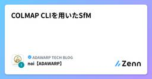

ADAWARP TECH BLOGのフィード
https://zenn.dev/p/adawarp
ADAWARP TECH BLOGの投稿一覧
フィード

COLMAP CLIを用いたSfM
ADAWARP TECH BLOGのフィード
前回はCOLMAP GUIを用いてSfMを行いましたが、今回はCOLMAP CLIを試してみました！https://zenn.dev/adawarp/articles/328d93a99734cb 概要 使用したデータ今回も、前回に引き続き東京大学構内を撮影した動画から画像を切り出して使用しています。今回撮影した場所 COLMAP CLIを用いて行ったことSfMの具体的処理、つまり特徴点抽出・特徴点マッチング・マッピング（カメラポーズ推定）・重力方向推定（座標軸補正）をCOLMAP CLIに投げる形で行いました。また、pycolmapを用いてデータベースの操作とS...
4日前

COLMAP GUIを用いたSfM
ADAWARP TECH BLOGのフィード
3DGSデータを作成するにあたってSfM (Structure from Motion) を行うことができるソフトウェアは数多くありますが、中でもCOLMAPは無料（オープンソース）で、有力なソフトウェアの一つです。今回は、中でもとっつきやすいCOLMAP GUIを使って、3DGSデータを生成する方法を記していきます。今回は以下の環境で実行しています。OS: Windows 11 Home (25H2)CUDA 13.1CUDA Toolkit 13.3!事前に自身の環境にあったCUDA Toolkitを導入しておきましょう！ 環境構築・インストールCOLMAPは導...
9日前
RealityScan のメッシュを綺麗にする(自動編)
ADAWARP TECH BLOGのフィード
前編:Isaac Sim がメッシュをどう解釈しているのか では、Isaac Sim 側の physics:approximation を 7 モード切り替えて Carter を走らせた結果を見ました。none / sdf / meshSimplification はほぼ同じ軌跡で停止したconvexDecomposition は床に着地できず、凸パーツの上に浮いたまま滑らかに走ったconvexHull / boundingCube / boundingSphere は原理的に床面を作れず、即落下したapproximation をどう切り替えても走行中のガタガタが変わら...
14日前
Isaac Simがメッシュをどう解釈しているのか
ADAWARP TECH BLOGのフィード
前回の記事 では、Postshot で学習した 3D Gaussian Splatting (.ply) と RealityScan で作った LOD メッシュ (.fbx) を 1 つの Stage USD にまとめて、その上で Nova Carter を走らせるところまでをやりました。そのとき手元に残った課題が 「LOD メッシュがぼこぼこ」 という問題でした。3DGS は視覚を担当するので見た目には困らないものの、Carter の足元が貫通したり引っかかったりするのはメッシュやコライダーの問題です。この記事はその続きで、「元メッシュはそのまま使いつつ、Isaac Sim 側の a...
20日前
Isaac Sim の基礎 — UI・USD・ロボットの配置
ADAWARP TECH BLOGのフィード
シリーズ: Isaac Sim / Isaac Lab チュートリアル用語や前提知識は Isaac Sim / Isaac Lab を始める前に を参照してください。 この記事の目的Isaac Sim を起動した直後、初見では「何ができて、何を触ればよいか」が掴みにくいです。本記事では、最低限ここだけ押さえれば自分のロボットをシム上に置けるという範囲に絞って、UI のどこを見るか(ビューポート、Stage、プロパティ、コンテンツブラウザ)USD のシーン構造(Stage、Prim、参照)アセットの取得と再利用(同梱サンプル、Nucleus)ロボットを 1 体...
1ヶ月前
SfMツールの特徴・ライセンス比較まとめ
ADAWARP TECH BLOGのフィード
フォトグラメトリの分野において、RealityScanは個人利用・小規模商用では無料で使用できることもあり非常に人気があります。今回は、RealityScanの代替になるソフトウェアについて、機能や価格などをまとめていきます。今回RealityScanに加えて比較するのは、以下のソフトです。Metashape standardMetashape Professional3DF Zephyr Lite3DF Zephyr FullMeshroomCOLMAP 結論無料/低価格のツールではRealityScanの主機能を完全に代替...
1ヶ月前
3DGSとPLATEAUを重ねて精度を検証してみる【実践・評価編】
ADAWARP TECH BLOGのフィード
前回の記事に引き続き、Unity上で3DGSデータとPLATEAUデータを重ねて精度を検証していきます。https://zenn.dev/adawarp/articles/3dad5a7c974c04今回は、実際に位置を重ねて、その差を確かめていきます！ 今回用いる3DGSデータ今回は、東京大学本郷キャンパス構内の一部を3DGS化して用います。大きさは70m×20m程度です。現場スケール調整用AprilTagの配置作成したシーン 距離測定用スクリプトの導入Unityではデフォルトだと簡単に距離を測れないので、距離測定用のC#スクリプトを用意します。Dist...
1ヶ月前
3DGSとPLATEAUを重ねて精度を検証してみる【準備編】
ADAWARP TECH BLOGのフィード
これまで、3DGSを実寸にする方法をいろいろ試してきました。今度は、精度の検証のため、作った3DGSとPLATEAUのデータを重ねてずれを確かめていきます！検証イメージ今回は準備編ということで、PLATEAUデータと3DGSデータをUnity上に絶対座標で配置する方法を記します。 3DGSを作成する以前の記事で説明した通り、原寸大の3DGSデータを作ります。https://zenn.dev/adawarp/articles/006cbc7083b3c3作成した3DGSシーン PLATEAUと重ねる今回はUnityを用いてデータを重ねていきます。今回用いたのは、...
1ヶ月前
OpenUSD 入門: Isaac Sim 6.0 を例に Stage / Schema / Composition を一通り見る
ADAWARP TECH BLOGのフィード
Isaac Sim 6.0 を触り始めると、.usda / .usdc / .usdz のような拡張子、Stage パネルや Layer パネル、UsdPhysics.CollisionAPI といった用語、add_reference_to_stage() のような API が次々と出てきます。これらはすべて OpenUSD (Pixar 由来の 3D シーン記述フォーマット) に由来するもので、Isaac Sim はその上に乗っているアプリケーションです。本記事は、Isaac Sim ユーザー (Python・Stage パネルくらいは知っているレベル) を想定して、OpenUSD ...
1ヶ月前
Isaac Sim 6.0: 3DGS で再構成した倉庫に Nova Carter を置いて動かす
ADAWARP TECH BLOGのフィード
前回の記事 では、Postshot で学習した 3D Gaussian Splatting (.ply / 2.5M splats) と RealityScan で作った LOD メッシュ (.fbx) を、それぞれ Isaac Sim 6.0 上で ParticleField3DGaussianSplat (視覚) と UsdPhysics.MeshCollisionAPI (物理) に変換し、1 つの Stage USD (sendai_stage.usda) にまとめるところまでをやりました。今回はその続編として、同じ sendai_stage.usda の上に NVIDIA N...
1ヶ月前
LeRobot — 学習済みポリシーを実機で動かす(評価)
ADAWARP TECH BLOGのフィード
シリーズ: LeRobot チュートリアル — 第 5 回 / 全 5 回前回: ポリシーのトレーニング(第 4 回) はじめに第 4 回で outputs/train/<run>/checkpoints/last/pretrained_model/ というチェックポイントができたところです。この記事では、そのチェックポイントを 実機の SO-101 で動かして 、ポリシーが本当にタスクをこなせるかを確かめます。具体的には、lerobot-record に --policy.path=... を渡して teleop なしの自律推論 モードで動かし、評価用のエピ...
1ヶ月前
AWSIMで使ったメッシュからAutoware用のPCD点群マップを作る
ADAWARP TECH BLOGのフィード
!対象読者本記事は、AWSIM の物理コライダ用に FBX メッシュをすでに用意してある方 を対象にしています。3D Gaussian Splatting (3DGS) マップを AWSIM に組み込んだ環境を前提に書いていますが、コライダ用の FBX メッシュさえ手元にあれば 3DGS 由来でなくても同じ手順で PCD を作れます。3DGS の組み込み手順は前回記事 AWSIMに自作の3D Gaussian Splattingマップを組み込む を参照してください。 はじめにAutoware で自己位置推定（NDT）を動かすには、走行環境を点群で表した PCD マップ が必...
2ヶ月前
AWSIMに自作の3D Gaussian Splattingマップを組み込む
ADAWARP TECH BLOGのフィード
!対象読者本記事は、AWSIM（TIER IV 製、Unity ベースの自動運転シミュレータ）の新宿マップサンプルをすでにビルド・起動できる方 を対象にしています。Unity Editor の基本操作（GameObject 配置・Inspector からのコンポーネント追加・Package Manager 操作）はある程度ご存知である前提です。3D Gaussian Splatting（以下 3DGS）モデル自体の学習方法（COLMAP → Gaussian Splatting 公式実装等）は 本記事のスコープ外 です。すでに .ply ファイルが手元にある状態からスタートします...
2ヶ月前
3DGSのスケールを実寸に合わせる方法【屋外編】
ADAWARP TECH BLOGのフィード
前回に引き続き、今度は屋外のシーンでAprilTagを用いた3DGSスケーリングの精度を検証していきます。AprilTagを用いたスケーリングの方法については、以前の記事をご覧ください。https://zenn.dev/adawarp/articles/006cbc7083b3c3 ロケーション小さな公園を含む路地です。やや閉鎖的な空間ではありますが、広さや上部の開放、ライティングといった点で前回より厳しい条件です。シーンの大きさは20m×15mくらいです。公園です全景 結果RealitySacn内での距離キャリブレーション結果は以下のような感じでした。十分良好...
2ヶ月前
Isaac Sim 6.0 に 3D Gaussian Splatting (.ply) を取り込む
ADAWARP TECH BLOGのフィード
はじめにNVIDIA Isaac Sim 6.0 では、3D Gaussian Splatting を OpenUSD 側のスキーマ ParticleField3DGaussianSplat（OpenUSD 26.03 で追加）に変換して読み込めるようになっています。実シーンの PLY（Postshot で学習した 2,534,239 splats / 約 600 MB）を実際に変換して、合わせて RealityScan 出力の FBX メッシュも 1 つの Stage USD に並べて読めるところまで確認したログです。結論としては、同梱の omni.kit.convert...
2ヶ月前
3D の feed-forward 系 6 手法を実機比較
ADAWARP TECH BLOGのフィード
はじめに360 度カメラを使った SfM / 3DGS のアプリ（KuukanMaker）を開発しています。撮影プロトコルが多少雑でも倉庫を「ざっくり 3D 化」できる仕組みが欲しく、その文脈で写真 → 3D 空間を 1 回の推論で出力する feed-forward 系を実機検証しました。用語:「1 forward」「N 視点を 1 forward」: ニューラルネットに入力を 1 回通すこと（forward pass = 推論 1 回分）。feed-forward 系は「最適化ループなしに 1 回 〜 数回の forward だけで出力が出るネットワーク」のこと。p...
2ヶ月前
Sora Python SDKとSora Rust SDKの違い
ADAWARP TECH BLOGのフィード
はじめに時雨堂の Sora Rust SDK を使って、最小限の WebRTC 配信ツール（カメラとマイクをキャプチャして Sora のチャンネルへ送信する streamer と、同じチャンネルから受信して表示する viewer）を書きました。以前は同じ用途を Sora Python SDK ベースで実装していたため、両者を実体験ベースで比較できます。この記事では、前提となる基本概念である codec と hardware acceleration を整理したうえで、Sora Python SDK と Rust SDK の違いを説明します。!用語はあえて英語のまま書いています...
2ヶ月前
Isaac Sim / Isaac Lab を始める前に — 概念・用語・Tips まとめ
ADAWARP TECH BLOGのフィード
シリーズ: Isaac Sim / Isaac Lab チュートリアル — 第 0 回(前提知識リファレンス)最初に一度読んで、以降の各記事から参照する位置づけです。 この記事の目的Isaac Sim と Isaac Lab は、別々のプロダクト でありながら一緒に使うことが多く、どちらも Omniverse プラットフォーム上で動作し、それぞれが独自の Python を同梱しています。これがスタックで最も混乱しやすいポイントです。チュートリアルの多くは「どのコマンドをどの Python で動かすのか」「USD シーンとは何か」「初回起動で固まったように見えるのはなぜか」を...
2ヶ月前
3DGSのスケールを実寸に合わせる方法【評価編】
ADAWARP TECH BLOGのフィード
前回の記事で、AprilTagを用いて部屋の原寸大の3DGSデータを作成しました。https://zenn.dev/adawarp/articles/006cbc7083b3c3今回は、その精度評価をしていきます！評価はいくつかの場所について実測距離とsupersplat上での3DGSデータ測量距離から行います。 部屋の寸法だいたい7×6×3(m)くらいです。 AprilTagを用いたスケールの精度calculated distanceは1.01程度であり、おおよそ1%程度の誤差があります。このずれは、マーカーから検出したcontrol pointが（元の写真ごとの...
2ヶ月前
3DGSのスケールを実寸に合わせる方法【実践編】
ADAWARP TECH BLOGのフィード
前回の記事での調査に基づいて、実際に原寸大の3DGSを作っていきます。 AprilTagを使って合わせるまずはAprilTagを2枚以上印刷します。公式の配布元から持ってきてもいいですし、RealityScanから生成することもできます（やり方は後述）。https://github.com/AprilRobotics/apriltag-imgs!AprilTagはBSD-2 Clauseライセンスに基づき提供されています。商用利用・改変・再配布等が可能ですが、ライセンス情報と規約を確認するようにしましょう。印刷したら、撮影場所の任意の場所に配置します。直線距離を測れるとこ...
2ヶ月前